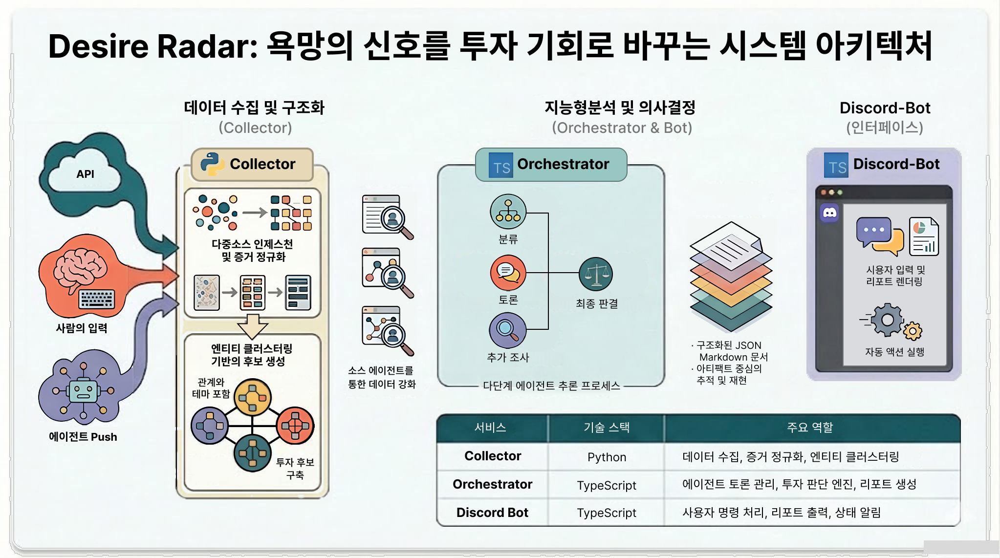
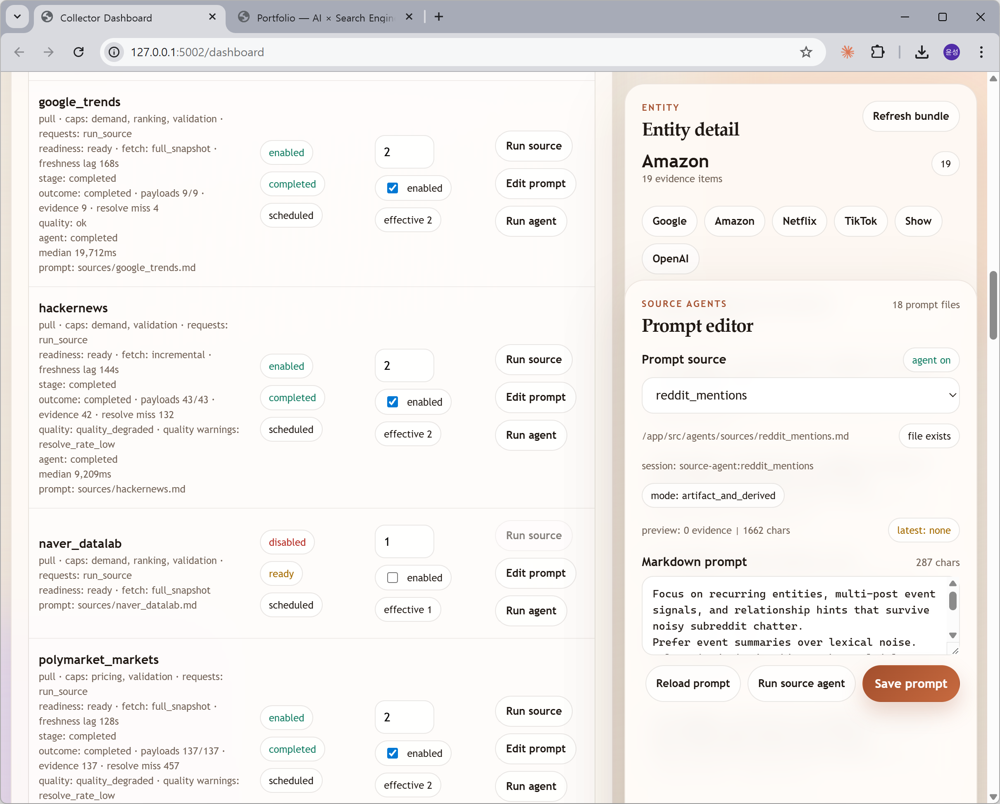
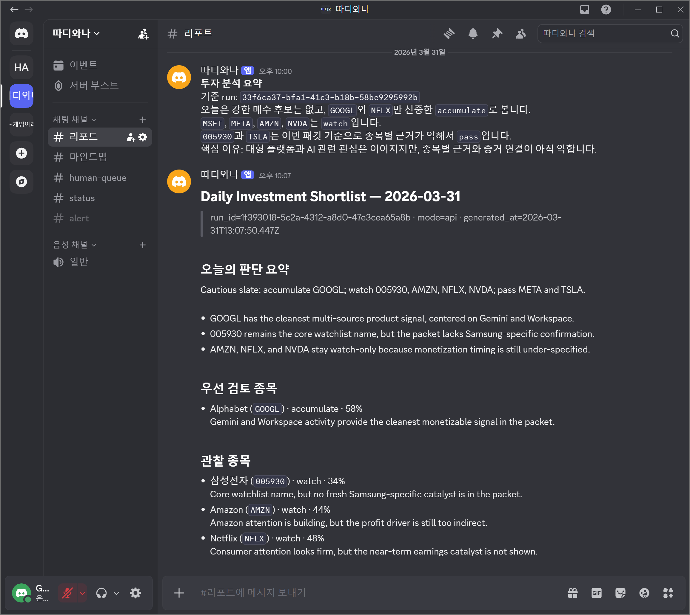

Collector: 데이터 수집 및 적재의 고도화
- Python 개발. 다차원의 Pull / Push / Human / 파생 소스 통합 Ingestion 제공.
- 수집 채널 및 Registry의 티어/분류 동적 관리 및 원본 증거 보존.
- 배치 CLI LLM 분석으로 Entity Cluster 단위 생성, Triage 최적화 수행.
- 크롤러뿐만 아니라 Reddit, Polymarket, X 등 복합 소스의 상태 증거를 보존.
삼성SDS에서 12년간 검색 시스템 엔진 핵심 개발부터 최신 LLM 인프라 고도화 및 파인튜닝 리딩까지 전문성을 증명해 왔습니다.
최근에는 그 경험을 살려 세상에 흩어진 정보와 행동 신호를 수집, 멀티 에이전트 간 토론 과정을 거쳐 투자 모델을 만들어내는 다중 에이전트 아키텍처(Desire-Radar)를 설계 및 개발
중입니다.
초기 정보 검색 엔진 구축 경험을 시작으로 한국어 NLP 연구개발을 지나 이제는 거대언어모델(LLM) 인프라와 에이전트 설계까지 통합하는 파이프라인 전문가로 성장했습니다.
거창한 플랫폼이라기보다 세상에서 벌어지는 일들을 모아 보관해 두고 추론의 증거로 지속 재조합하는 시스템입니다. 투자 관련 인사이트와 검증 엔진은 이 수집 구조 위에 구축된 초기 실험입니다.
자료 수집, 전처리, 판단 로직을 한 곳에 묶지 않습니다. 수집기가 원본 데이터를 명확히 "근거(Evidence)"로서 보존하며, MCP 오케스트레이터의 에이전트들이 그 근거 위에서 다단계 추론(Triage, Debate, Verification)을 진행하여 결과를 만들어냅니다.
↑ 검색 시스템이 문서를 가져와 인덱스를 구축하고 서빙하는 그 단계를, AI 시대에는 멀티 에이전트들이 "이해"하여 증거로 축적하는 설계입니다.



엔지니어의 커리어를 통틀어, 규모 있고 복잡한 데이터 인프라 위에서 최신 기술을 접목하여 AI 프로덕트로 안착시킨 다양한 핵심 경험들입니다.
한국어 정보 추출 성능을 증명한 공개 벤치마크 참여 모델 튜닝. 언어모델 파이프라인의 핵심 품질 관리.
코퍼스 수집, 전처리로 시작해 RoBERTa 아키텍처까지 훈련시키는 풀사이클 경험을 쌓았습니다.
Elasticsearch 환경의 재인덱스 전략 및 Dense Retrieval 구현 등 전통적 정보 검색 뼈대 설계 경험.
H100 32장을 이용한 멀티노드 클러스터 구성, 그리고 Tool Calling 모델 개발 5인 리딩 등 팀단위 배포 인프라 성공.